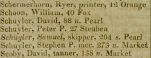
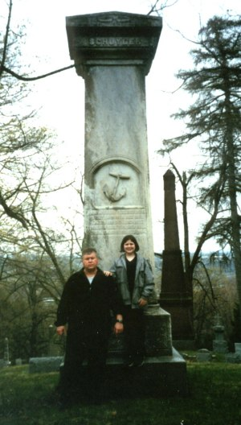
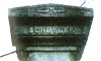

Captain Samuel Schuyler
According to his tombstone, the Albany resident we know as Captain Samuel Schuyler was born on October 20, 1781. The story of his formative years is unknown. But we may expect it is in some way related to that of early Albany's foremost founding family. By 1805, this Samuel Schuyler had married one Mary Martin/Mortin - a mulatto woman, and their son Richard March Schuyler was baptized in the Albany Dutch Church. Over the next twenty years, ten more children would be born to those Albany parents.
By that time, Samuel Schuyler had begun to find work along the Albany waterfront. In 1809, he was one of a number of Afro Albanian men (described on the tax roll as "Blackman") whose personal property was assessed along Quay Street. Within a few years, he was running his own boat. As time passed, he gained local repute as a towboat operator and was widely known as "Captain" Samuel Schuyler.
In 1813, the first city directory listed "Skipper" Samuel Schuyler's home at 204 South Pearl Street. In 1815, the directory listed his name and address but for the first time, italicized his name indicating that he was a "free person of color." By 1815, Schuyler's holdings included several lots along South Pearl Street between Bassett and Schuyler Streets. By that time, he also began to acquire additional real estate in a budding Afro Albanian neighborhood in the city's South End. As late as 1822, his name still appeared in italics. Over the next twenty years, his family holdings spread east including dozens of lots that would give these Schuylers control of a two-block area that ran from South Pearl Street toward the waterfront.
By the 1830s, Captain Samuel Schuyler had been joined by his sons. By mid-decade, Samuel Schuyler & Company, a flour and feed store located at Bassett and Franklin Streets, was advertising in the city directory. His sons would build the Schuyler Towboat Company into a successful Albany business. Making the transition from sail to steam, the Schuylers also operated a coal yard on their South End property.
 Captain Samuel Schuyler died in May 1842. His will provided that his widow Mary have use of the entire estate ("chiefly real estate in the city of Albany") during her lifetime and then the property would be shared equally by his five adult and three minor children.
An impressive monument to him was erected (probably by his children) on one of the most prominent vistas overlooking the Hudson at Albany Rural Cemetery.
Patriarch of a prominent Afro-Albanian family, Captain Samuel Schuyler was perhaps Albany's first significant African-ancestry businessmen. We continue to seek closure on basic elements of his life. In the meantime, we welcome the opportunity to discuss this further in a public program focused on his role in the formation and emergence of an Afro Albanian middle class in early Albany.
Excerpt from the 1815 edition of the city directory showing Skipper
Samuel Schuyler's name in italics. The last line in the preface to that
volume states "Those persons whose names are in italics are free people
of color." (Emphasis supplied)
The most recent city directory we have examined in detail is for the year 1822. Not only was the name of skipper Samuel Schuyler at 203 S. Pearl Street italicized, but the next two entries on the directory page were for Thomas Schuyler on Lydius St. "cond." and Samuel Schuyler, a waiter at 67 N. Pearl. Both of those names were italicized as well. However, in 1827, the names of those Schuyler were not italicized.
Steve and Staren Bielinski standing in front of the Samuel Schuyler monument at Albany Rural Cemetery in May 2000. That iconic marker is the centerpiece of a Schuyler family plot that includes members of three generations of the Albany family. Photo taken by Staren's brother, Nick Klapp, and was filed in the Graphics Archive of the CASHP.
Initially, the South End was a term used to describe the so-called "pastures" sitting on the flood plain and located south of Lydius Street, east of South Pearl, and bordered by the southern boundary of the city. That tract had been deeded from the Dutch Church to the city corporation in 1815. Today, the term is much more encompassing - covering (at the least) both sides of South Pearl Street. We offer a public program on Schuyler's role in the settlement of the initial South End!